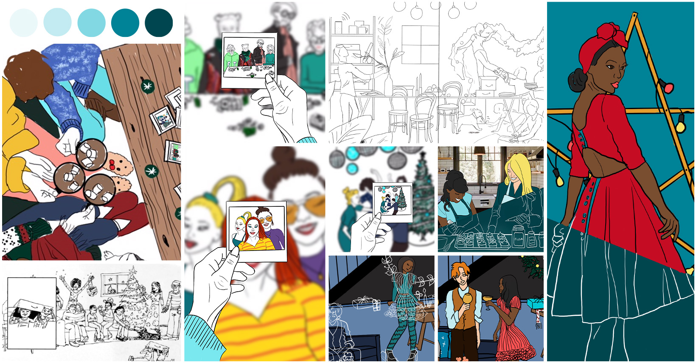
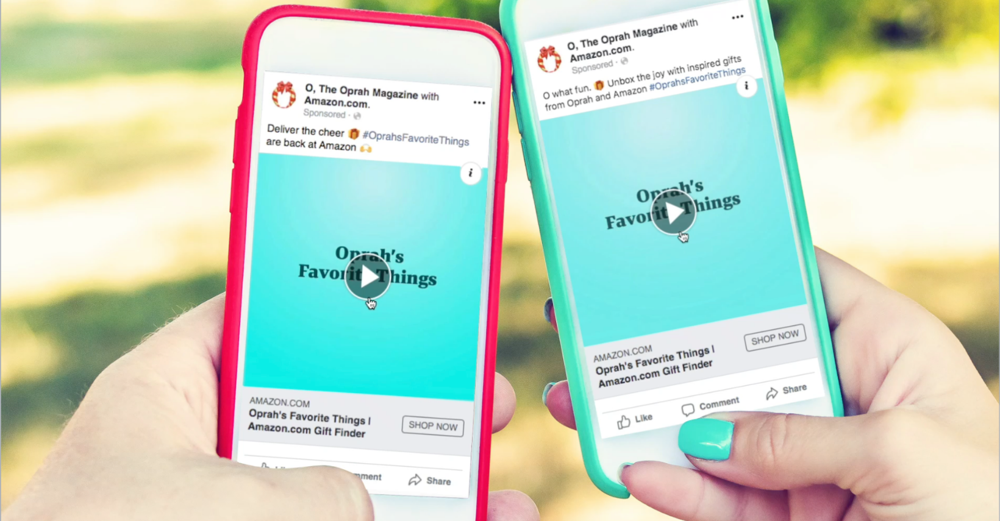
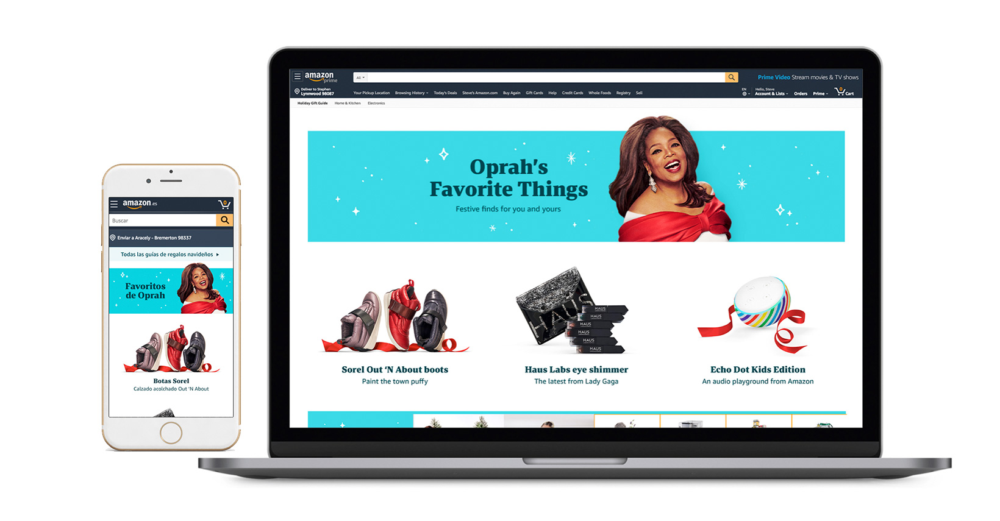

OFT 2019
If there is a holiday shopping list worth merit, it’s Oprah’s Favorite Things. The list has been curated by Oprah, herself for the last 25 years. Amazon has partnered with Oprah for the last five to offer shopping for these goodies at one place. Our target audience are women of color aged 30-50. In 2019 the media buy consisted of 2 spreads in O magazine, digital ad page take over on Oprah.com, digital ads on Oprahmag.com, organic video placements on Oprah.com’s Facebook and Instagram social channels and the shopping experience of Oprah’s Favorite Things on Amazon.com. It takes a small village to make this “Christmas” miracle come true.
The over-arching concept is for the holiday season is “Togetherness”. I helped draw several concepts for this concept to across in print. As a team we had almost 60 ideas! 60 ideas were internally brought down to about 15 and then whittled down to 5 with help from our Group Creative Director. Each of these ideas had corresponding copy lines and a digital execution. After review with our Head of Global Brand Design, we had 3 solid concepts to share with our Global GM of Mass Advertising. Together, we landed on “Merry & Light”. An evolution of last years theme where Amazon now has equity in the partnership to create a story our customers can follow. Merry & Light is about the feeling brought on by spending time with loved ones and the joy felt when giving something special.
I had little oversight on print ads after conceptualizing. We hired an agency to photo retouch and create the mechanicals. I spoke with them early on about process and expectations. The photo art director annotated editing notes passed on by our producer. I assisted only as an extra pair of eyes when reviewing proofs and offering critique. Upon, receiving mechanicals I proofed them for any potential errors and uploaded final mechanicals to Hearst (O magazine) on the due date.
Due to budget constraints (and life challenges), I was not able to attend the photo shoot. However, I armed my fellow creatives with concept sketches and a run-down of what I needed. To make sure they captured everything to properly execute these ads I got on a live call with the photographer on set and explained to him my concept and discussed thoughts on what would be the best way to capture the shots. With his partnership, shots for digital were done in two days. After retouch was completed and assets where masked in individual layers, I utilized Animate CC to create motion graphics in multiple sizes. Depending on the size of the creative different assets we used. I included a hover state for each graphic (where applicable) to tie in with our “sparkle” onsite creative.

As a creative team, we stretched on the ask for social content. Originally, Oprah’s team asked us for static images. We asked if there was an opportunity to do something more for our customer on social platforms. After asking several times… weeks later we were told we could do video. We had no video content, Oh no! But there was no fear. We quickly researched, concepted and consulted social experts and delivered 3 MP4s. 1 to be used on both Facebook and Instagram and the other two were specific for each channel. In addition, we also gave them the static images they requested.
It took 3 visual designers to bring together the onsite shopping experience. We partnered with UX to offer customers 1 page shopping for Oprah’s list. We captured an editorial feel above the fold with a combination of Amazon’s Holiday Styleguide and Oprah creative featuring top products. Below, customers could explore products and read actual Oprah quotes for each. I helped create onsite traffic drivers as static and animated gifs. I helped create graphics for product collections within the product grid and I helped create the Spanish version of the onsite experience.
